1 Introduction
For most of the history of computing, finding a previously unknown and exploitable software vulnerability—a zero-day—was slow, expensive and the preserve of a small community of specialists. That scarcity shaped who could attack critical systems. The best-known example, Stuxnet, used four Windows zero-days and stolen code-signing certificates to sabotage uranium-enrichment centrifuges at Iran’s Natanz facility (Falliere et al. 2011; Langner 2013; Zetter 2014); it required resources available only to states. Banks have historically been attacked by cheaper means: stolen credentials, phishing, insiders and known but unpatched vulnerabilities.
Since 2024 that scarcity has eroded. Large language model (LLM) agents have moved from solving capture-the-flag exercises (Zhang et al. 2024) to exploiting known web vulnerabilities from their advisories (Fang et al. 2024; Zhu et al. 2024) and to finding new, real vulnerabilities in widely deployed software (Big Sleep team 2024; DARPA 2025). Frontier AI developers now operate dedicated vulnerability-research agents (OpenAI 2025; Google DeepMind 2025; Anthropic 2026a), and at least one threat report describes an espionage campaign in which an AI agent executed most tactical steps (Anthropic 2025). If the cost of discovering zero-days falls by an order of magnitude, the threat model for the financial system changes.
This paper asks six questions:
How much vulnerability discovery is now done with AI, by whom, and with what trajectory?
Which commercial software has been exploited as a zero-day, and how has exploitation changed?
Are hardware-wallet zero-days relevant to banks?
Where is the global banking system exposed, and would AI-discovered zero-days be used against it?
In Thailand, which groups of institutions are likely targets and which are most vulnerable?
Should central banks, including the Bank of Thailand (BOT), treat this as a priority, and what should they do?
We answer with four bodies of evidence. The first is the complete CVE List V5 (CVE Program 2026), from whose free-text credits we identify AI-credited discoveries using a transparent, auditable lexicon. The second is the CISA KEV catalogue (Cybersecurity and Infrastructure Security Agency 2026), which we turn into a panel of exploited vulnerabilities with product categories, disclosure-to-listing lags and a validated zero-day proxy. The third is a curated set of financial-sector incidents and hardware trust-anchor cases. The fourth is a group-level framework for Thailand together with a Monte Carlo model of shared-vendor contagion calibrated to KEV event rates.
1.0.0.1 Contributions.
(i) We provide what is, to our knowledge, the first census of AI-credited CVEs across the full CVE corpus, with a documented lexicon and its known false positives. (ii) We document a 2026 disclosure shock in commercial software and show that exploitation has grown more slowly than disclosure. (iii) We validate a simple KEV-based zero-day proxy against published industry counts. (iv) We connect vulnerability data to financial-sector exposure through a bank-weighted exploitation-pressure measure and an incident record. (v) We offer a reproducible scenario model and a ten-point policy agenda for central banks. All code and derived data accompany the paper.
1.0.0.2 Headline findings.
AI-assisted discovery is real, fast-growing and so far mostly defensive; exploitation of commercial perimeter and IT-management products is the main channel through which zero-days reach financial institutions; and the main systemic risk for a system such as Thailand’s is correlated exposure through shared vendors and service providers rather than a direct attack on the core payment infrastructure. Section 12 sets out why these findings justify central-bank attention now.
1.0.0.3 Roadmap.
Section 2 sets out concepts; Section 3 reviews related work; Section 4 describes data and methods. Sections 5–9 present results on disclosure, AI discovery, exploitation, hardware and financial exposure. Section 10 analyses Thailand, Section 11 reports the simulation, Section 12 discusses policy, and Section 13 states limitations.
2 Background and concepts
2.1 Zero-days, n-days and the exploitation window
A zero-day is a vulnerability exploited before the vendor has disclosed it or made a fix available; an n-day is exploited after disclosure, during the period in which users have not yet applied the fix. Figure 1 places both on a single timeline. The zero-day window runs from first exploitation to disclosure; the n-day window runs from disclosure until each user deploys the patch. Historical studies found that zero-day attacks often persisted for months before discovery (Bilge and Dumitraş 2012) and that stockpiled exploits had long expected lifetimes (Ablon and Bogart 2017). More recent industry reporting suggests that the time from disclosure to exploitation has collapsed to days (Mandiant 2024).
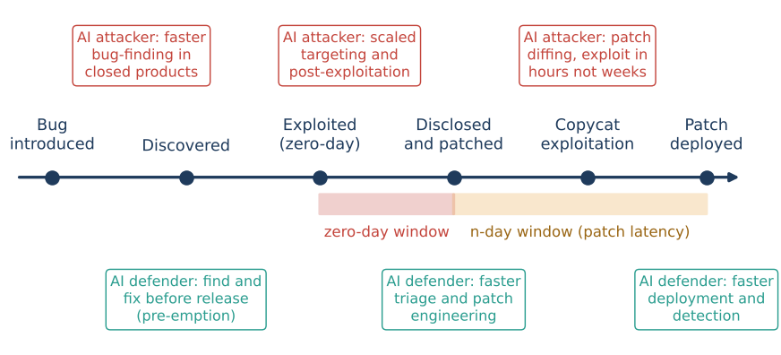
2.2 Levels of AI involvement
We distinguish five levels, because public debate often conflates them:
Human researchers using conventional tools such as fuzzers and static analysers.
Humans use AI for code reading, triage or tooling. This is largely invisible in public records.
An AI system, or an organisation whose product is AI-driven discovery, is credited in the vulnerability record. This is the level we measure.
An agent finds and weaponises a vulnerability end-to-end, as demonstrated in competitions and laboratory studies (DARPA 2016, 2025; Zhu et al. 2024).
An agent executes most steps of an intrusion campaign against real targets; at least one such case has been publicly reported (Anthropic 2025).
Public data observe L2 directly, L4 occasionally through threat reports, and L1 and L3 hardly at all. Our measurements are therefore lower bounds on AI involvement.
2.3 Why banks are exposed
Banks run the same commercial products as other large organisations. These include perimeter VPN and firewall appliances, managed file transfer (MFT), mail and collaboration servers, IT-management and remote-access tools, hypervisors, and enterprise applications. Banks also connect to shared infrastructures: real-time gross settlement (RTGS), retail payment switches, card networks, messaging networks and a small number of IT and cloud providers. A zero-day in a widely used product therefore produces correlated exposure across institutions, which is the mechanism through which an operational event becomes a financial-stability event (Kashyap and Wetherilt 2019; Eisenbach et al. 2022; Adelmann et al. 2020).
3 Related literature
3.0.0.1 Vulnerability lifecycle and economics.
Empirical work has measured vulnerability disclosure and patching (Frei et al. 2006; Arora et al. 2010), the hidden lifetime of zero-days (Bilge and Dumitraş 2012), and the economics of exploit stockpiles (Ablon and Bogart 2017). Exploitation-prediction models such as EPSS (Jacobs et al. 2021) and catalogues of known-exploited vulnerabilities (Cybersecurity and Infrastructure Security Agency 2021) reflect a shift from severity-based to evidence-based prioritisation. Annual reviews by Google Project Zero, Google’s Threat Intelligence Group and Mandiant count in-the-wild zero-days (Stone 2022; Mandiant 2023; Google Threat Analysis Group and Mandiant 2024; Google Threat Intelligence Group 2025) and document a concentration of exploitation on enterprise and perimeter products.
3.0.0.2 AI offensive and defensive capability.
Benchmarks measure LLM capability on security tasks (Bhatt et al. 2023; Zhang et al. 2024; Zhu et al. 2025). Agent studies show exploitation of one-day (Fang et al. 2024) and, with coordinated agent teams, zero-day web vulnerabilities (Zhu et al. 2024). On the defensive side, Google’s Big Sleep reported an exploitable SQLite bug before release (Big Sleep team 2024). DARPA’s AI Cyber Challenge showed cyber-reasoning systems finding and patching real open-source bugs (DARPA 2025), and AI developers have launched agentic security researchers (OpenAI 2025; Google DeepMind 2025) and restricted-access defensive programmes (Anthropic 2026a). Threat-intelligence reports document misuse, ranging from reconnaissance and scripting (Microsoft Threat Intelligence and OpenAI 2024) to largely autonomous intrusion operations (Anthropic 2025). Most of this work measures capability in controlled settings; we add population-level evidence from the CVE corpus.
3.0.0.3 Cyber risk and financial stability.
A macro-financial literature models how cyber events propagate: through payment-system impairment (Eisenbach et al. 2022), runs (Duffie and Younger 2019), common exposures and concentration (Kashyap and Wetherilt 2019; Healey et al. 2018), and loss distributions (Bouveret 2018; Aldasoro et al. 2022). The IMF identified cyber risk as a growing macro-financial concern (International Monetary Fund 2024; Adelmann et al. 2020). Standard setters have issued guidance on financial market infrastructure (FMI) resilience (CPMI–IOSCO 2016), a common lexicon (Financial Stability Board 2018) and incident-reporting convergence (Financial Stability Board 2023, 2025). Supervisors have run cyber stress tests (European Central Bank 2024) and introduced oversight of critical third parties (European Parliament and Council 2022; Bank of England et al. 2024). This literature rarely uses vulnerability-level data; we connect the two.
3.0.0.4 Hardware security.
Research on payment cards (Murdoch et al. 2010; Basin et al. 2021), secure elements (Nemec et al. 2017; Roche 2024), TPMs (Moghimi et al. 2020), HSMs (Campana and Bédrune 2019) and hardware wallets (Datko et al. 2018; Kraken Security Labs 2020) supplies the material for our discussion of hardware trust anchors.
4 Data and methods
4.1 CVE List V5
We downloaded the official bulk release of the CVE List V5 (CVE Program
2026) as of 12 November 2026 (425,189 files; 405,375 records
in PUBLISHED state). For each record we extract dates, the
assigning CVE Numbering Authority (CNA), the first affected vendor and
product, the first CWE, the maximum CVSS base score across containers,
the CISA ADP SSVC “Exploitation” field, and the free-text
credits. Only 43.4% of records published in 2026 carry any
credit. Several of the largest commercial CNAs—Microsoft, Google Chrome,
Apple, Oracle, SAP, Fortinet and the Linux kernel CNA—recorded none
(Table 1).
4.2 Identifying AI-credited discoveries
We apply a lexicon of case-insensitive regular expressions to the credit text (Appendix Table 16). Tier 1 records name an AI model, agent or tool as finder or co-finder (for example “Google Big Sleep”, “XBOW”, “Claude Security”, “OpenAI Codex Security”, “Fluid Attacks’ AI SAST Scanner”). Tier 2 records credit an AI-native security organisation or an AI laboratory without naming a model (for example AISLE, depthfirst, ZeroPath, Horizon3.ai, or “OpenAI” as an organisation). We reviewed random samples of matches for every pattern. This review led to three exclusions: a human researcher whose given name is Claude, a username containing “gpt”, and the brand name of an established human bug-bounty programme whose name contains the letters “AI” (76 false matches before exclusion). Tier 2 is a proxy: AI tooling is likely but not certain for each record. Because credit coverage is incomplete and AI assistance at level L1 is rarely credited, all counts are lower bounds. We also classify the affected software into domains with keyword rules on vendor, product and CNA.
4.3 KEV exploitation panel
The KEV catalogue (Cybersecurity and Infrastructure Security Agency 2026) lists vulnerabilities with reliable evidence of in-the-wild exploitation. We map each entry to one of 15 product categories with ordered keyword rules (Appendix 16); 7.1% remain unclassified. We merge the CVE publication date and compute the listing lag The catalogue opened on 3 November 2021 with a back-filled list, so we use lags only for CVEs published on or after that date ().
4.3.0.1 Zero-day proxy.
We call an entry early-listed if . A vulnerability that is already exploited when it is disclosed is typically listed within days, whereas n-days are listed after weeks or months. We benchmark annual counts of early-listed vulnerabilities against published industry counts of in-the-wild zero-days (Section 7).
4.3.0.2 Right-censoring.
Recent CVEs have had less time to be exploited and listed. For trend comparisons we therefore use a censoring-robust cohort: CVEs published from 2022 up to 180 days before the snapshot, counting only listings within 180 days of publication.
4.4 Bank-weighted exploitation pressure
Not every product category matters equally to banks. We assign a banking-relevance weight to each category (Appendix Table 18). Perimeter devices and MFT score 1.0; consumer routers and IoT 0.2; industrial control 0.1. Exploitation pressure is , where is the number of post-launch KEV entries in category ; we split into zero-day-like and later-listed parts. Because the weights are judgemental, we report the rank stability of under 2,000 random perturbations of and under uniform weights.
4.5 Curated case data
We coded 33 financial-sector incidents from 2011 to 2025 (Table 20) and 11 hardware trust-anchor cases (Table 7) from public reporting. The incident list is a purposive sample of well-documented cases chosen to span victim types (commercial banks, central banks, supervisors, FMIs, payment and crypto firms), regions and vectors. Shares computed from it are descriptive, not estimates of population frequencies.
4.6 Thai group framework
We score 12 groups of Thai financial-system participants on five 1–5 dimensions: attractiveness , systemic importance , exposure , shared-vendor concentration and defensive capacity . From these we form a target index , a vulnerability index , and a risk score Robustness is assessed over 10,000 draws that shift each score by (probabilities 0.25/0.5/0.25) and draw component weights from a Dirichlet(5) distribution. The scores are structured judgements about groups; they say nothing about any individual institution.
4.7 Shared-vendor contagion model
We simulate one year of exploited-vulnerability events against a stylised system of 67 nodes whose group structure follows Thailand. The groups are 6 D-SIBs, 8 other domestic banks, 12 foreign banks, 6 specialised financial institutions (SFIs), 3 virtual banks, 25 payment and e-money providers, 5 shared IT providers and 2 payment FMIs (Table 11). Each node runs one of five vendors in each of six enterprise technology layers; vendors are drawn according to market shares . Events arrive per layer as , where is the KEV event rate for publication years 2023–2025 (Table 12), is an AI offence multiplier and is the share of bugs pre-empted by defensive AI. Each event hits vendor with probability , and each user of that vendor runs the affected product with probability .
A share of events (the early-listed share for that layer) start with a zero-day phase. In that phase, mass campaigns (probability ) compromise each exposed node with probability . Targeted campaigns choose victims weighted by attractiveness, where scales attacker operational throughput. In the n-day phase, copycat exploitation begins after a time-to-exploit for zero-days, or after times an empirical KEV lag for n-days. Node is then exposed until its patch time and is compromised with probability A compromised shared provider passes compromise to each of its eight clients with probability 0.25. A compromise disrupts payments with a group-specific probability. An event is systemic if it disrupts at least 10% of system payment value or any payment FMI. Scenario parameters are listed in Table 13. The model is comparative: absolute levels depend on assumptions, so we emphasise relative risks and test them over a grid of the two least-anchored parameters, and .
4.8 Reproducibility
The pipeline consists of nine scripts
(s01–s09) that download, extract, classify,
analyse, simulate and produce every table and figure. Every number
quoted in the text is written to outputs/key_numbers.json.
Random seeds are fixed. The complete pipeline runs in under ten minutes
on one CPU core with 3 GB of memory.
5 Results I: the 2026 disclosure shock
Figure 2 shows that CVE publication grew steadily from about 6,500 a year in 2015–2016 to 39,924 in 2024 and 48,150 in 2025. It then broke trend in 2026. Between January and October 2026, 89,845 CVEs were published, 2.27 times the 39,638 published over the same months of 2025. Monthly volume rose from 4,274 in October 2025 to 17,051 in October 2026, and the acceleration began around March 2026. By 12 November, 96,498 CVEs had been published in 2026.
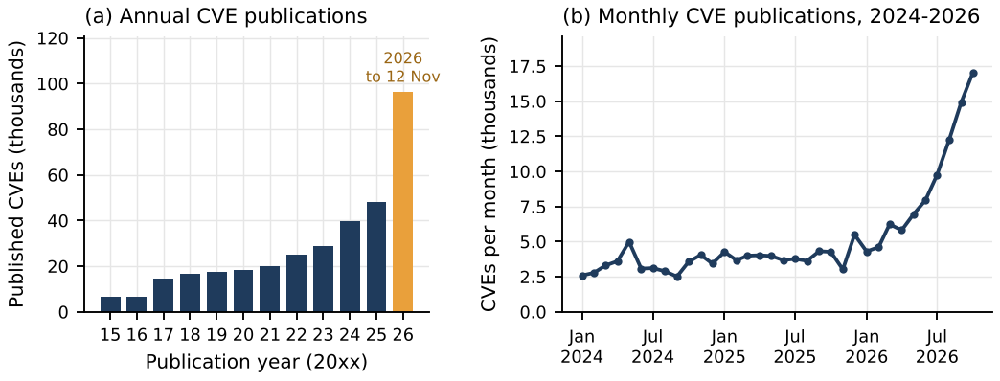
The surge is not confined to open-source projects. Table 1 and Figure 3 show that vulnerabilities assigned by large commercial vendors’ own CNAs rose by factors of 33 (Google Chrome), 13 (Oracle), 4 (Microsoft) and 2 (Apple). For banks, this matters more than the total: these vendors supply the browsers, operating systems, office software, databases and middleware on which every bank runs. The patch workload of a bank’s IT function scales with these counts. A doubling or quadrupling of vendor advisories in a single year is an operational shock even before any vulnerability is exploited.
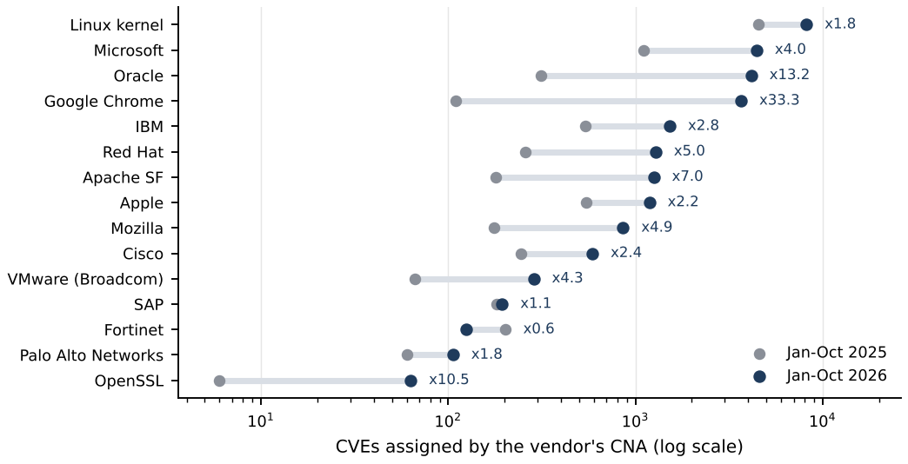
| Assigning CNA | Jan–Oct 2025 | Jan–Oct 2026 | Ratio | Credited (%) | AI-credited |
|---|---|---|---|---|---|
| Linux kernel | 4,516 | 8,197 | 1.8 | 0 | 0 |
| Microsoft | 1,108 | 4,437 | 4.0 | 0 | 0 |
| Oracle | 314 | 4,154 | 13.2 | 0 | 0 |
| Google Chrome | 110 | 3,667 | 33.3 | 0 | 0 |
| IBM | 538 | 1,524 | 2.8 | 15 | 1 |
| Red Hat | 257 | 1,282 | 5.0 | 73 | 176 |
| Apache SF | 179 | 1,252 | 7.0 | 90 | 177 |
| Apple | 547 | 1,187 | 2.2 | 0 | 0 |
| Mozilla | 176 | 859 | 4.9 | 100 | 95 |
| Cisco | 245 | 589 | 2.4 | 17 | 0 |
| VMware (Broadcom) | 66 | 286 | 4.3 | 5 | 0 |
| SAP | 182 | 194 | 1.1 | 0 | 0 |
| Fortinet | 201 | 124 | 0.6 | 0 | 0 |
| Palo Alto Networks | 60 | 106 | 1.8 | 97 | 1 |
| OpenSSL | 6 | 63 | 10.5 | 100 | 30 |
5.0.0.1 What caused the shock?
The data cannot attribute the surge to AI on their own. The CNAs with the largest increases (Microsoft, Chrome, Oracle) publish no credits, so their records do not say who or what found the bugs. Three observations nevertheless point to AI-assisted discovery as a major contributor. First, the timing coincides with the deployment of agentic security researchers and restricted-access defensive programmes in late 2025 and 2026 (OpenAI 2025; Google DeepMind 2025; Anthropic 2026a). Second, among CNAs that do publish credits, AI-credited records rose from almost none to hundreds per month over the same period (Section 6). Third, the CNAs that publish credits and grew fastest—Apache (+177 AI-credited CVEs in 2026), Red Hat (+176), Mozilla (+95) and OpenSSL (+30)—have substantial AI-credited shares. Other factors, including CNA process changes and the expansion of CNAs such as VulnCheck and GitHub, also contribute. We treat AI as a likely but unquantified driver of the commercial-vendor surge.
6 Results II: AI in vulnerability discovery
6.1 Scale and trajectory
We identify 1,598 AI-credited CVEs: 665 in Tier 1 (an AI system named) and 933 in Tier 2 (an AI-native organisation credited). Seven appear before 2025, 151 in 2025 and 1,440 in 2026. The first Tier 1 credit in our data is dated 20 March 2025 (XBOW, an autonomous penetration-testing system, credited on an Apache CVE). Figure 4 shows that monthly counts grew at about 18.6% per month (s.e. 3.8 percentage points) between July 2025 and October 2026, a doubling time of about 4.1 months. In October 2026, AI-credited CVEs were 4.1% of all CVEs that carry any credit and 2.0% of all CVEs. Because the largest commercial CNAs publish no credits, the true share is higher.
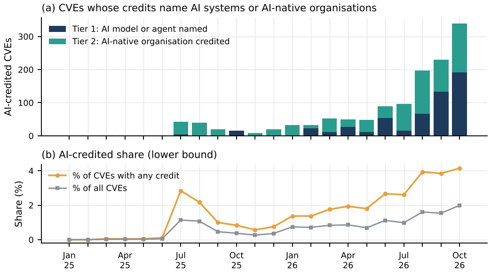
6.2 Who is credited and what they find
Table [tab:developers] and Figure 5(a) show a concentrated field. Credits naming Anthropic’s Claude models and agents (510) and the AI-native firm AISLE (438) dominate, followed by OpenAI (196, of which 74 name Codex Security or a GPT model), ZAST.AI (171) and a long tail of smaller AI security firms. Google’s Big Sleep appears on 18 CVEs. These include CVE-2025-6965 in SQLite, which the vendor described as otherwise known only to threat actors—an example of AI pre-empting exploitation (Table 19).
| Developer credited | Tier 1 | Tier 2 | Total |
|---|---|---|---|
| Anthropic | 510 | 0 | 510 |
| AISLE | 0 | 438 | 438 |
| OpenAI | 74 | 122 | 196 |
| ZAST.AI | 0 | 171 | 171 |
| Other AI tools/orgs | 74 | 28 | 102 |
| WatchGuard | 0 | 28 | 28 |
| Striga | 0 | 28 | 28 |
| depthfirst | 0 | 22 | 22 |
| Horizon3.ai | 0 | 21 | 21 |
| Mopmonk AI | 0 | 20 | 20 |
| 18 | 0 | 18 | |
| CodeAnt AI | 0 | 18 | 18 |
| Other (7 developers) | 8 | 49 | 57 |
| Group (CVEs published in 2026) | Scored | Mean CVSS | High+ (%) | Critical (%) |
|---|---|---|---|---|
| AI-credited (tier 1) | 593 | 7.07 | 56.8 | 9.8 |
| AI-credited (tier 2) | 796 | 6.83 | 47.6 | 9.0 |
| Human-credited | 40,338 | 6.98 | 51.3 | 12.4 |
| All other 2026 CVEs | 89,689 | 7.07 | 56.8 | 12.4 |
Mann–Whitney test, all AI-credited vs. human-credited: .
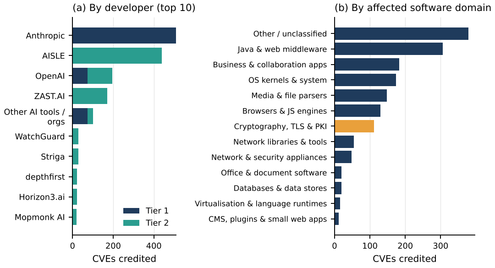
The affected software is mostly open-source infrastructure: Java and web middleware (largely Apache projects), operating-system components, media parsers, browsers, and business and collaboration applications (Figure 5b). One domain stands out for banking: 111 AI-credited CVEs affect cryptographic, TLS and PKI libraries. These comprise 52 in Bouncy Castle, the dominant Java cryptography provider in enterprise and banking software; 33 in OpenSSL; and 25 in wolfSSL/wolfSSH, which is widely embedded in devices. Cryptographic libraries are the software layer of the trust anchors discussed in Section 8.
6.2.0.1 Severity.
AI-credited vulnerabilities are not trivial. In 2026, Tier 1 CVEs had a mean maximum CVSS score of 7.07, with 56.8% rated high or critical, against 6.98 and 51.3% for human-credited CVEs (Table 3). The difference between all AI-credited and human-credited CVEs is not significant (). AI systems find vulnerabilities of the same severity as human researchers.
6.3 From AI discovery to exploitation
Fifteen AI-credited CVEs have entered the KEV catalogue (Table 4). Three features stand out. First, the median lag from publication to KEV listing is 17 days; these were exploited as n-days after disclosure rather than as zero-days. Second, seven of the fifteen were found by Horizon3.ai, an offensive-security firm that focuses on enterprise products attackers prize, so the apparent exploitation rate of AI-credited CVEs (9.4 per 1,000, against 1.5 for human-credited CVEs over 2023–2026) reflects what these firms look at more than how they find it. Third, only one Tier 1 CVE (Brotli, credited to OpenAI Codex Security) has been exploited, and none of the 86 Tier 1 CVEs in the censoring-robust cohort was listed within 180 days. Products in this set—SolarWinds Web Help Desk, SimpleHelp, JFrog Artifactory, Apache ActiveMQ and Tomcat, Palo Alto Expedition, Langflow and PHP—are typical of enterprise estates, including banks.
| CVE | Product | Credited AI party | Published | KEV listed | Lag (d) |
|---|---|---|---|---|---|
| CVE-2023-27524 | Apache Superset | Horizon3.ai | 2023-04-24 | 2024-01-08 | 259 |
| CVE-2024-9465 | Palo Alto Networks Expedition | Horizon3.ai | 2024-10-09 | 2024-11-14 | 36 |
| CVE-2025-3248 | Langflow Langflow | Horizon3.ai | 2025-04-07 | 2025-05-05 | 28 |
| CVE-2025-5086 | Dassault Systèmes DELMIA Apriso | Hacktron | 2025-06-02 | 2025-09-11 | 101 |
| CVE-2025-40551 | SolarWinds Web Help Desk | Horizon3.ai | 2026-01-28 | 2026-02-03 | 6 |
| CVE-2025-40536 | SolarWinds Web Help Desk | Horizon3.ai | 2026-01-28 | 2026-02-12 | 15 |
| CVE-2026-34197 | Apache ActiveMQ | Horizon3.ai | 2026-04-07 | 2026-04-16 | 9 |
| CVE-2026-48558 | SimpleHelp SimpleHelp | Horizon3.ai | 2026-06-12 | 2026-06-29 | 17 |
| CVE-2026-34486 | Apache Tomcat | Striga | 2026-04-09 | 2026-08-04 | 117 |
| CVE-2026-66384 | JFrog Artifactory | OpenAI (organisation) | 2026-08-12 | 2026-08-27 | 15 |
| CVE-2026-42016 | JFrog Artifactory | OpenAI (organisation) | 2026-07-27 | 2026-09-11 | 46 |
| CVE-2026-5430 | WSO2 Multiple Products | Hacktron | 2026-08-06 | 2026-09-24 | 49 |
| CVE-2026-109618 | PHP Group PHP | OpenAI (organisation) | 2026-10-21 | 2026-10-26 | 5 |
| CVE-2026-109619 | PHP Group PHP | OpenAI (organisation) | 2026-10-21 | 2026-10-26 | 5 |
| CVE-2026-111497 | Google Brotli | Codex Security / Aardvark | 2026-10-22 | 2026-10-27 | 5 |
6.3.0.1 Answer to RQ1.
AI-credited discovery went from negligible to roughly 2–4% of credited CVEs in eighteen months and is doubling every four months. The publicly visible activity is overwhelmingly defensive or coordinated: AI developers, AI-native security firms and open-source maintainers disclosing and fixing bugs. Offensive use is documented in threat reports (Microsoft Threat Intelligence and OpenAI 2024; Anthropic 2025), but does not appear in vulnerability records, because attackers do not credit themselves. The number of people “using AI to hunt for zero-days” therefore cannot be counted directly. The observable footprint is large and growing, and the capability it reveals is available, with some lag, to attackers.
7 Results III: exploitation of commercial software
7.1 What gets exploited
Of the 1,779 KEV entries, 263 vendors appear among additions since 2022; the ten most frequent (led by Microsoft, Cisco, Adobe, Apple, Google and Oracle) account for 51.8%. Figure 6 shows how the composition of additions has shifted. Enterprise perimeter and network infrastructure—VPN, firewall, application-delivery and router platforms from vendors such as Fortinet, Palo Alto Networks, Citrix, Ivanti, Cisco and SonicWall—rose from 14.6% of additions in 2022 to 21.0% in 2026. IT-management and remote-access tools rose to 14.6% in 2026, from 1.8% in 2022. Browsers and plug-ins declined. A new category appeared: AI and automation platforms (for example Langflow and LiteLLM), with 12 entries, 11 of them added in 2026. The Herfindahl index of exploitation across vendors fell from 0.114 in 2022 to 0.035 in 2026: attackers now exploit a wider range of vendors.
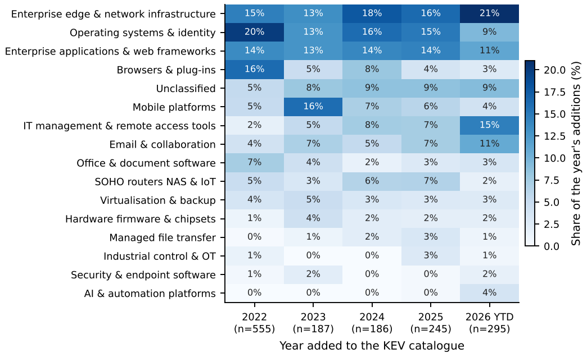
7.2 How fast exploitation follows disclosure
Table 5 and Figure 7(a) report listing lags. In the censoring-robust cohort, the median lag has been between 4 and 6 days for every publication year since 2022. Between 51.5% and 64.9% of listed vulnerabilities were listed within a week, and 28–39% were listed on or before the day the CVE was published. We find no further compression after 2022 (Kendall’s , ). Industry studies report that the average time-to-exploit fell from about a month to a few days during 2021–2023 (Mandiant 2024); our data suggest that the compression has since plateaued at that low level. This does not support the stronger form of our hypothesis H2 (continuing compression). The weaker form holds: the window is already too short for monthly patch cycles.
| Cohort: listed within 180 days | Zero-day counts | ||||||
|---|---|---|---|---|---|---|---|
| 2-6(lr)7-8 CVE year | Median lag | IQR | d (%) | d (%) | Proxy | Reported | |
| 2021 | 16 | 20.0 | [0, 143] | 31.2 | 50.0 | 8 | – |
| 2022 | 99 | 6.0 | [-1, 45] | 39.4 | 51.5 | 51 | 55 |
| 2023 | 134 | 4.0 | [0, 14] | 34.3 | 64.9 | 87 | 97 |
| 2024 | 132 | 4.5 | [0, 36] | 29.5 | 59.1 | 78 | 75 |
| 2025 | 175 | 5.0 | [0, 33] | 28.0 | 55.4 | 97 | – |
| 2026 | 65 | 5.0 | [0, 15] | 27.7 | 56.9 | 128 | – |
November–December 2021 only. CVEs published to mid-May 2026. “Proxy” counts all early-listed post-launch entries by publication year. “Reported”: industry counts of in-the-wild zero-days as reported by Mandiant (2022) and Google (2023, 2024) (Mandiant 2023; Google Threat Analysis Group and Mandiant 2024; Google Threat Intelligence Group 2025). Google Project Zero’s own count for 2022 was 41. Benchmark figures should be verified against the original reports.
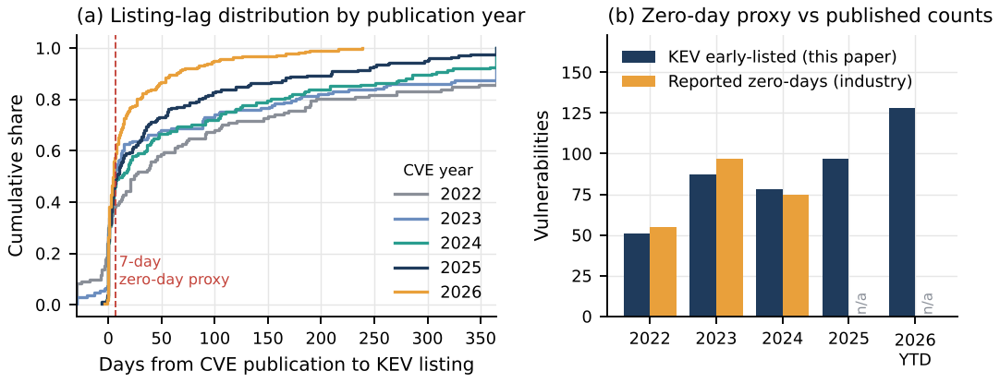
7.2.0.1 Validating the zero-day proxy.
Early-listed counts by publication year were 51, 87 and 78 for 2022–2024, against reported in-the-wild zero-day counts of 55, 97 and 75—a mean absolute deviation of 7.2% (Figure 7b). The two series measure overlapping but not identical sets, so the agreement supports using the proxy for levels and trends, not for individual classification. On this proxy, zero-day-like exploitation rose to 97 in 2025 and 128 in 2026 to date, the highest in the series.
7.3 Exploitation has grown more slowly than discovery
KEV additions rose from 186 in 2024 to 245 in 2025 and 295 in 2026 to 10 November. Disclosure grew much faster, so the share of new CVEs that are exploited fell (Table 6). In the censoring-robust cohort, an average of 3.89 of every 1,000 CVEs published between 2022 and 2025 were listed within 180 days, against 2.62 per 1,000 in the first half of 2026. If the disclosure shock is substantially AI-driven, the defenders’ side of AI is currently ahead: vulnerabilities are being found and fixed faster than attackers are converting them into exploitation. This is our hypothesis H1. The same numbers carry a warning. A falling exploitation rate on a quadrupling base still means more exploited vulnerabilities in absolute terms, and the defenders’ patch workload has multiplied.
| Publication half-year | CVEs | In KEV within 180 d | Per 1,000 |
|---|---|---|---|
| 2022H1 | 12,343 | 53 | 4.29 |
| 2022H2 | 12,656 | 46 | 3.63 |
| 2023H1 | 14,120 | 55 | 3.90 |
| 2023H2 | 14,727 | 79 | 5.36 |
| 2024H1 | 20,349 | 54 | 2.65 |
| 2024H2 | 19,575 | 78 | 3.98 |
| 2025H1 | 23,642 | 96 | 4.06 |
| 2025H2 | 24,508 | 79 | 3.22 |
| 2026H1 | 24,815 | 65 | 2.62 |
7.3.0.1 Answer to RQ2.
The commercial products exploited most often, and most often as zero-days, are perimeter devices (59.9% zero-day-like), operating systems (61.8%), browsers (93.2%), mobile platforms (70.8%) and managed file transfer (64.7%). Products with the heaviest ransomware association are mail and collaboration servers (37.2%), MFT (35.3%) and IT-management tools (29.3%) (Table 8). Well-known named campaigns in these categories—MOVEit, GoAnywhere, Accellion FTA, Exchange ProxyLogon, Citrix NetScaler, Ivanti Connect Secure, Fortinet FortiOS, SharePoint and Oracle E-Business Suite—are the specific products behind these aggregates.
8 Hardware trust anchors and hardware wallets
RQ3 asks whether zero-days in hardware wallets matter for banks. Table 7 summarises 11 cases. Hardware wallets share their building blocks with banking infrastructure: secure elements, microcontrollers, firmware and cryptographic libraries. These same blocks protect payment cards, PIN and payment HSMs, FIDO keys used by bank staff, TPMs in servers, and the secure enclaves of the phones that run mobile banking.
| Year | Target | Attack class | Access required | Banking analogue |
|---|---|---|---|---|
| 2010 | EMV chip-and-PIN cards | Protocol logic flaw (PIN verification bypass) | Physical card and modified terminal | Card-present payments |
| 2017 | Infineon RSA key generation (ROCA) | Weak key generation (factorable public keys) | Remote (public key only) | Smart cards; tokens; TPMs; national ID used for e-banking |
| 2018 | Trezor; Ledger; KeepKey (wallet.fail) | Fault injection and supply-chain tampering | Physical device | Hardware authentication tokens; HSM tamper resistance |
| 2019 | Apple BootROM A5-A11 (checkm8) | Unpatchable BootROM memory-safety bug | Physical (USB) | Integrity of phones running mobile banking |
| 2019 | General-purpose HSM (research disclosure) | Firmware memory-safety bugs enabling key extraction | Network/API access to HSM | Payment and PIN HSMs in bank data centres |
| 2019 | Intel fTPM and STMicro TPM (TPM-Fail) | Timing side channel on ECDSA | Local or network timing | Server attestation and key storage |
| 2020 | Trezor One/T seed extraction | Voltage glitching of microcontroller | Physical (minutes) | Stolen token or HSM scenarios |
| 2021 | EMV contactless (Visa PIN bypass) | Protocol flaw allowing PIN bypass | Physical proximity (relay) | Contactless payments |
| 2023 | Ledger Connect Kit | Malicious library version published via compromised account | Remote | Banking SDKs and front-end libraries |
| 2024 | Infineon ECDSA in YubiKey 5 (EUCLEAK) | Electromagnetic side channel | Physical (lab equipment) | FIDO keys used by bank staff |
| 2025 | Bybit cold-wallet signing (Safe interface) | Manipulated transaction display (blind signing) | Remote (supplier compromise) | Maker-checker payment approval screens |
Three lessons follow. First, six of the eleven cases require physical access to the device: glitching, side channels, or a USB connection to a boot ROM. Such attacks do not scale to a remote campaign against a bank, but they matter for stolen tokens, insider threats and supply-chain tampering. Second, the remote cases are the dangerous ones, and they sit in software around the hardware. ROCA was a flaw in key generation in a secure-element library, exploitable from a public key alone (Nemec et al. 2017). The Ledger Connect Kit incident was a compromised software dependency. The 2025 Bybit theft manipulated the transaction-display layer of a multisig signing workflow, so that signers approved a transfer they did not intend. The banking analogue of this last case is the maker–checker approval screen for high-value payments. Third, AI discovery is now active in exactly this software layer: 111 AI-credited CVEs affect cryptographic libraries (Section 6).
8.0.0.1 Answer to RQ3.
Hardware-wallet zero-days are relevant to banks less through the wallets themselves than through common components and patterns. These are secure-element libraries (ROCA-type flaws), HSM firmware (Campana and Bédrune 2019), payment-card protocols (Murdoch et al. 2010; Basin et al. 2021) and transaction-display integrity in signing workflows. Banks and central banks that hold or plan to hold digital assets, issue tokenised deposits or pilot CBDC with offline hardware wallets inherit these risks directly.
9 Financial-sector exposure
9.1 Bank-weighted exploitation pressure
Weighting KEV categories by their relevance to bank estates (Figure 8, Table 8) puts enterprise perimeter infrastructure first (, of which 97 zero-day-like), followed by operating systems and identity (91.7), enterprise applications and web frameworks (81.6), IT-management and remote-access tools (73.8), and mail and collaboration (70.2). The ranking is robust to the weights: across 2,000 random perturbations of , the median Kendall rank correlation with the baseline is 0.88 (5th percentile 0.80), and it is 0.83 under uniform weights.
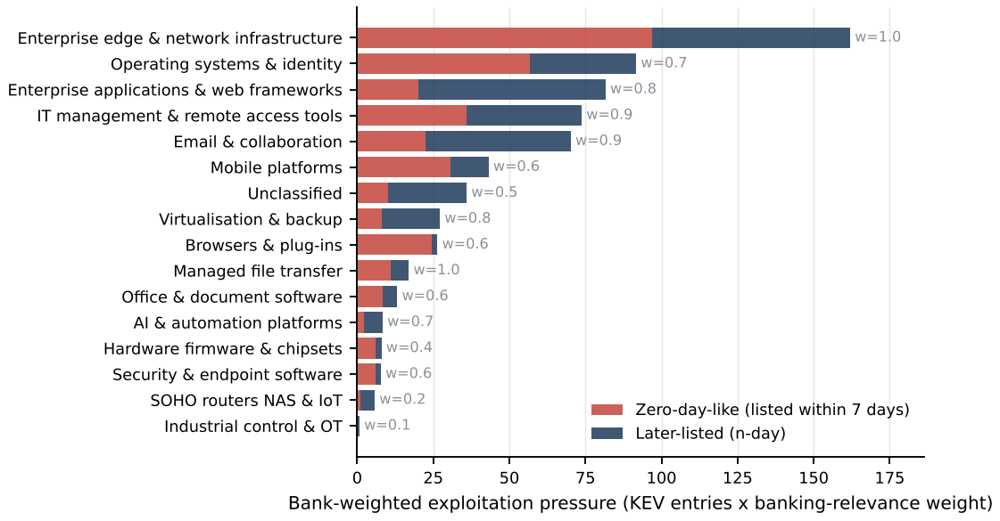
| Product category | Zero-day-like (%) | Median lag (d) | Ransomware (%) | Weight | Pressure | |
|---|---|---|---|---|---|---|
| Enterprise edge & network infrastructure | 162 | 59.9 | 5.0 | 21.0 | 1.0 | 162.0 |
| Operating systems & identity | 131 | 61.8 | 0.0 | 20.6 | 0.7 | 91.7 |
| Enterprise applications & web frameworks | 102 | 24.5 | 38.5 | 21.6 | 0.8 | 81.6 |
| IT management & remote access tools | 82 | 48.8 | 9.0 | 29.3 | 0.9 | 73.8 |
| Email & collaboration | 78 | 32.1 | 23.0 | 37.2 | 0.9 | 70.2 |
| Mobile platforms | 72 | 70.8 | 1.0 | 0.0 | 0.6 | 43.2 |
| Unclassified | 72 | 27.8 | 23.0 | 12.5 | 0.5 | 36.0 |
| Virtualisation & backup | 34 | 29.4 | 24.5 | 23.5 | 0.8 | 27.2 |
| Browsers & plug-ins | 44 | 93.2 | 1.0 | 2.3 | 0.6 | 26.4 |
| Managed file transfer | 17 | 64.7 | 4.0 | 35.3 | 1.0 | 17.0 |
| Office & document software | 22 | 63.6 | 3.0 | 9.1 | 0.6 | 13.2 |
| AI & automation platforms | 12 | 25.0 | 29.5 | 8.3 | 0.7 | 8.4 |
| Hardware firmware & chipsets | 20 | 75.0 | 2.0 | 5.0 | 0.4 | 8.0 |
| Security & endpoint software | 13 | 76.9 | 2.0 | 15.4 | 0.6 | 7.8 |
| SOHO routers NAS & IoT | 29 | 17.2 | 48.0 | 3.4 | 0.2 | 5.8 |
| Industrial control & OT | 8 | 12.5 | 85.0 | 0.0 | 0.1 | 0.8 |
9.2 What the incident record shows
Table 9 and Figure 9 summarise the 33 curated incidents (full list in Table 20). About half (17) began with stolen credentials, fraud, social engineering or misconfiguration, as in Bangladesh Bank 2016, JPMorgan Chase 2014 and Capital One 2019. Five involved a zero-day. In every one of the five, the zero-day was in a widely used commercial product rather than in banking software. Three were in MFT appliances (Accellion FTA, which reached the Reserve Bank of New Zealand; GoAnywhere; MOVEit), one was in on-premise Exchange (the European Banking Authority) and one was in a document reader, used against a security vendor serving banks (RSA, 2011). Three cases were supply-chain compromises (NotPetya, SolarWinds Orion, Bybit), and three exploited known n-days in perimeter devices or browsers (for example Travelex through an unpatched Pulse Secure VPN). One, the 2024 CrowdStrike update failure, was a non-malicious common-mode failure; it shows how a single shared component can disrupt banks and payment services worldwide within hours.
| Initial-vector class | Cases | Share (%) | Central bank / supervisor | Thailand |
|---|---|---|---|---|
| Credentials, fraud or misconfiguration | 17 | 51.5 | 2 | 4 |
| Zero-day in commercial product | 5 | 15.2 | 2 | 0 |
| Vector not disclosed | 4 | 12.1 | 2 | 0 |
| Known (n-day) vulnerability | 3 | 9.1 | 0 | 0 |
| Supply-chain compromise | 3 | 9.1 | 1 | 0 |
| Non-malicious common-mode failure | 1 | 3.0 | 0 | 0 |
| Total | 33 | 100.0 | 7 | 4 |
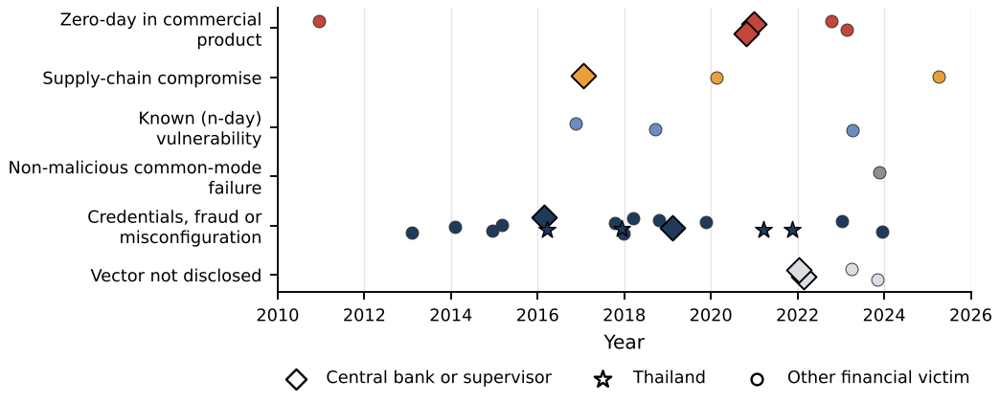
Seven of the 33 cases hit central banks or supervisors. Their pattern is instructive: the RBNZ and EBA intrusions came through file-transfer and mail systems—commodity corporate IT—not through settlement systems. Bangladesh Bank was compromised in the environment around its payment-messaging interface. Bank Indonesia and the Bank of Zambia suffered ransomware.
9.3 Would AI-discovered zero-days be used against banks?
The evidence supports four statements. (i) Financial institutions are attractive targets for both financially motivated and state-linked actors. Some state-linked groups have a long record of attacks on banks and crypto firms (Bangladesh Bank, Bybit), and the AI-orchestrated campaign reported in 2025 reportedly included financial institutions among its intended targets (Anthropic 2025). (ii) Zero-days reach banks through the commercial products that banks share with every other sector. An attacker does not need a “banking zero-day”; an MFT or VPN zero-day reaches hundreds of banks at once. (iii) As AI lowers the cost of discovery, the scarcity that limited zero-day use to a few actors weakens. Mass-exploitation crews of the MOVEit type are the actors most likely to benefit, because their business model already converts one zero-day into many victims. (iv) We found no publicly documented case, up to our snapshot, of an AI-discovered zero-day used against a bank. Given the lags in public reporting and attackers’ incentives not to disclose methods, this absence is weak evidence of safety.
9.3.0.1 Answer to RQ4.
The global banking system is exposed mainly through perimeter devices, MFT, IT-management tools, mail and collaboration servers, and shared service providers. AI-discovered zero-days are likely to be used against banks through these products. The likeliest form is mass exploitation and data extortion. Destructive attacks on payment systems are possible but less likely, because they require deeper access and invite a strong state response.
10 Thailand
10.1 Institutional setting
Thailand’s financial system combines a concentrated commercial banking sector, in which a small number of domestic systemically important banks (D-SIBs) account for most deposits and payments, with state-owned specialised financial institutions (SFIs) that serve retail, rural, housing and SME segments. A large non-bank payment and e-money sector operates under the Payment Systems Act B.E. 2560 (2017) (Kingdom of Thailand 2017). Virtual banks were licensed in 2025 under a framework issued in 2024 (Bank of Thailand 2024), and digital-asset exchanges and custodians are supervised by the securities regulator. The core payment infrastructure comprises the BOT-operated RTGS system (BAHTNET), the retail real-time payment system (PromptPay and related services operated by National ITMX) and card switching. The Cybersecurity Act B.E. 2562 (2019) designates the banking and financial sector as critical information infrastructure (Kingdom of Thailand 2019), and the Thai Bankers’ Association operates a sector CERT (TB-CERT).
The four Thai cases in our incident set—ATM malware at a state-owned bank (2016), web-application data leaks at two large banks (2018), a card-not-present fraud wave (2021) and remote-access malware on customers’ phones (2022–2023)—involved no zero-day. Thai institutions nevertheless run the same commercial perimeter, MFT, mail, IT-management and virtualisation products that appear in the KEV catalogue, so they sit in the path of the same global mass-exploitation waves.
10.2 Targets and vulnerable groups
Table 10 and Figure 10 report the group framework. Groups with the highest target index are the D-SIBs, payment FMIs, shared IT and cloud providers, the BOT’s corporate and supervisory IT, and SFIs. Groups with the highest vulnerability index are retail customers and their devices, payment and e-money providers, virtual banks, shared providers, digital-asset firms and non-bank lenders. Combining the two, three groups rank highest: shared IT and cloud providers (; in the top three in 86% of robustness draws), D-SIBs (0.67; 73%) and SFIs (0.59; 52%). Digital-asset exchanges and custodians (0.56) and non-bank payment providers (0.52) follow.
| Group | Rank | 90% rank | P(top 3) | ||||||
|---|---|---|---|---|---|---|---|---|---|
| Shared IT and cloud service providers to the sector | 4 | 5 | 4 | 5 | 3 | 0.72 | 1 | 1–5 | 86 |
| Large systemically important banks | 5 | 5 | 5 | 4 | 5 | 0.67 | 2 | 1–6 | 73 |
| Specialised financial institutions (state-owned) | 4 | 4 | 4 | 4 | 3 | 0.59 | 3 | 1–8 | 52 |
| Digital-asset exchanges and custodians | 5 | 2 | 5 | 4 | 3 | 0.56 | 4 | 1–10 | 32 |
| Non-bank payment and e-money providers | 3 | 3 | 5 | 4 | 2 | 0.52 | 5 | 2–10 | 25 |
| Retail customers and their mobile devices | 3 | 2 | 5 | 4 | 1 | 0.47 | 6 | 2–11 | 11 |
| Other domestic commercial banks | 3 | 3 | 4 | 4 | 3 | 0.44 | 7 | 3–11 | 8 |
| Virtual banks (licensed 2025) | 3 | 2 | 5 | 5 | 3 | 0.43 | 8 | 4–11 | 5 |
| Bank of Thailand corporate and supervisory IT | 4 | 4 | 3 | 3 | 4 | 0.43 | 9 | 3–11 | 5 |
| Payment FMIs (RTGS; retail switch; card switch) | 5 | 5 | 2 | 3 | 5 | 0.40 | 10 | 4–11 | 2 |
| Non-bank lenders and card companies | 2 | 2 | 4 | 4 | 2 | 0.32 | 11 | 6–12 | 0 |
| Foreign bank branches and subsidiaries | 3 | 2 | 3 | 3 | 4 | 0.27 | 12 | 9–12 | 0 |
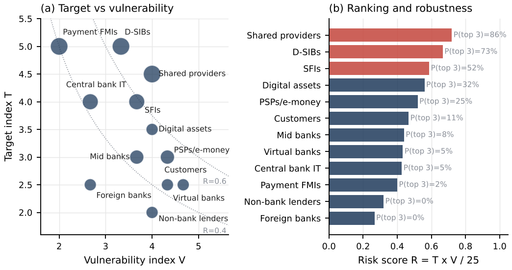
Three findings are robust to the perturbations. Shared providers rank at or near the top because they combine one-to-many access with concentration: a single compromised outsourcer, cloud tenant or core-banking vendor creates correlated exposure across several banks, as the SolarWinds, MOVEit (via service providers) and CrowdStrike cases illustrate. D-SIBs are the main target but not the most vulnerable: their defensive capacity offsets their exposure, yet their size makes any successful intrusion systemically relevant. Payment FMIs are high-value but low-vulnerability: limited internet exposure and strong controls place them tenth, which is consistent with the absence of documented intrusions into core RTGS platforms in our incident set.
10.2.0.1 Answer to RQ5.
The likely targets in Thailand are the D-SIBs, payment infrastructure, digital-asset platforms and the BOT itself. The groups most at risk are shared IT providers, D-SIBs and SFIs. The most vulnerable entry points are smaller non-bank payment firms, new virtual banks with concentrated cloud dependence, and customers’ devices—the last mainly as a fraud channel that seldom needs zero-days. Whether Thai banks “survive” depends less on whether a Thailand-specific zero-day exists than on how quickly Thai institutions close exposure to global ones, and on whether a compromise at one shared provider can be contained.
11 Scenario simulation
Tables 11–13 give the model’s structure, calibration and scenarios. The base event rate of 86.7 exploited-vulnerability events per year across six enterprise layers comes from KEV. Edge and VPN products carry the highest rate (28.3 per year) and, with MFT, the highest zero-day share (0.61 and 0.67). For n-days, the median empirical KEV lag in these layers is 64 days. Scenario S0 represents conditions before 2022 (fewer zero-days, a 32-day time-to-exploit). S1 represents current conditions. S2 triples zero-day discovery and attacker throughput and shortens time-to-exploit to one day. S3 adds AI-enabled defence: patch times cut by 65%, attack success reduced by 40% through detection, and 30% of bugs pre-empted. S4 adds vendor concentration to S2. S5 combines S3 with diversified vendor shares.
| Group | Nodes | Payment share | Patch median (d) | Success | P(disrupt) | Attractiveness |
|---|---|---|---|---|---|---|
| D-SIBs | 6 | 0.66 | 4 | 0.35 | 0.15 | 5 |
| Mid banks | 8 | 0.10 | 10 | 0.60 | 0.25 | 3 |
| Foreign banks | 12 | 0.06 | 7 | 0.45 | 0.20 | 3 |
| SFIs | 6 | 0.10 | 14 | 0.60 | 0.30 | 4 |
| Virtual banks | 3 | 0.01 | 5 | 0.60 | 0.30 | 3 |
| PSPs/e-money | 25 | 0.05 | 21 | 0.80 | 0.35 | 3 |
| Shared providers | 5 | 0.00 | 10 | 0.60 | 0.00 | 4 |
| Payment FMIs | 2 | 0.00 | 5 | 0.25 | 0.10 | 5 |
| Layer | Edge/VPN | MFT | Email/collab | IT mgmt/RMM | Virtualisation | Enterprise apps |
|---|---|---|---|---|---|---|
| Event rate per year (KEV-calibrated) | 28.3 | 5 | 12.7 | 14.3 | 6.3 | 20 |
| Share exploited as zero-day | 0.61 | 0.67 | 0.26 | 0.37 | 0.26 | 0.18 |
| Scenario | Vendor shares | ||||||||
|---|---|---|---|---|---|---|---|---|---|
| S0 Pre-2022 baseline | 0.6 | 32 | 1.3 | 0.25 | 1 | 1 | 1 | 0 | baseline |
| S1 Current (2023-26) | 1 | 5 | 1 | 0.35 | 1 | 1 | 1 | 0 | baseline |
| S2 AI offence | 3 | 1 | 0.2 | 0.5 | 3 | 1 | 1 | 0 | baseline |
| S3 AI offence + AI defence | 3 | 1 | 0.2 | 0.5 | 3 | 0.35 | 0.6 | 0.3 | baseline |
| S4 AI offence + concentration | 3 | 1 | 0.2 | 0.5 | 3 | 1 | 1 | 0 | concentrated |
| S5 AI offence + defence + diversified | 3 | 1 | 0.2 | 0.5 | 3 | 0.35 | 0.6 | 0.3 | diversified |
11.1 Results
Table 14 and Figure 11 report 4,000 simulated years per scenario. Under current conditions (S1), the model gives about 5.5 compromised institutions per year, a 26.6% annual probability that at least one D-SIB is compromised, a 3.0% probability of an FMI compromise and a 5.0% probability of a systemic event. The absolute levels depend on assumptions. The comparisons across scenarios are the informative part:
AI offence multiplies systemic risk. S2 raises the probability of a systemic event to 24.9%, 5.0 times S1. Across the robustness grid (Table 15), the ratio ranges from 4.0 to 6.8.
AI defence recovers most of the loss. S3 cuts the S2 probability to 9.8%. Across the grid, defence removes 50–75% of the systemic probability under AI offence (S3/S2 between 0.25 and 0.50).
Concentration amplifies. With a dominant vendor holding 60% of each layer, S4 reaches 35.2%, 36–64% above S2 across the grid.
Diversification helps less once defence is strong. The S5/S3 ratio ranges from 0.67 to 1.15, so its benefit is not robust when defence is already effective.
| Scenario | Events/yr | Compromised | P(D-SIB) % | P(FMI) % | P(systemic) % [95% CI] | RR vs S1 |
|---|---|---|---|---|---|---|
| S0 Pre-2022 baseline | 52 | 2.9 | 15.9 | 1.4 | 2.9 [2.4, 3.4] | 0.59 |
| S1 Current (2023-26) | 87 | 5.5 | 26.6 | 3.0 | 5.0 [4.3, 5.6] | 1.00 |
| S2 AI offence | 260 | 28.5 | 82.2 | 17.2 | 24.9 [23.6, 26.2] | 5.03 |
| S3 AI offence + AI defence | 182 | 10.7 | 47.7 | 6.8 | 9.8 [8.9, 10.7] | 1.98 |
| S4 AI offence + concentration | 260 | 36.9 | 93.5 | 24.0 | 35.2 [33.7, 36.7] | 7.12 |
| S5 AI offence + defence + diversified | 182 | 9.1 | 41.3 | 5.3 | 8.8 [7.9, 9.7] | 1.78 |
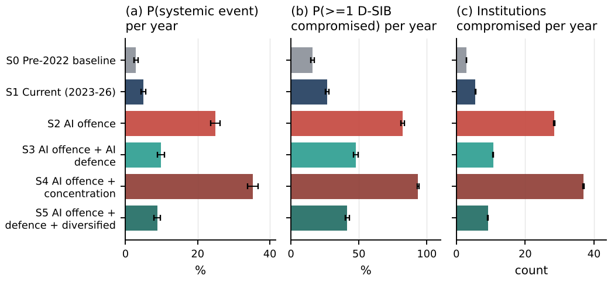
Figure 12 varies the offence multiplier and the patch-time factor jointly. Offence dominates: at today’s patch speed, the probability of a systemic event rises from 6% to 45% as the multiplier goes from 1 to 5. Faster patching alone has a modest effect. At a multiplier of 5, cutting patch times by 75% lowers the probability only from 45% to 40%. When copycat exploitation starts within a day of disclosure and most damaging events begin as zero-days, the decisive defences act before disclosure: pre-emptive discovery, smaller internet-facing exposure, detection and segmentation. This is the main operational lesson of the model.
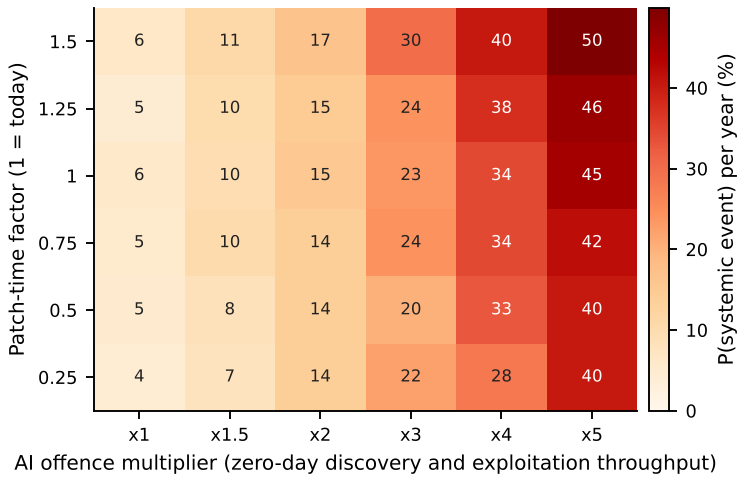
| S1 | S2 | S3 | S4 | S5 | S2/S1 | S3/S2 | S4/S2 | S5/S3 | ||
|---|---|---|---|---|---|---|---|---|---|---|
| 0.03 | 0.2 | 2.4 | 16.3 | 4.1 | 22.5 | 4.7 | 6.79 | 0.25 | 1.38 | 1.15 |
| 0.03 | 0.3 | 4.0 | 16.0 | 6.6 | 26.3 | 4.4 | 4.00 | 0.41 | 1.64 | 0.67 |
| 0.03 | 0.5 | 3.1 | 18.5 | 7.4 | 27.5 | 7.1 | 5.97 | 0.40 | 1.49 | 0.96 |
| 0.05 | 0.2 | 4.1 | 25.9 | 8.2 | 36.0 | 7.9 | 6.32 | 0.32 | 1.39 | 0.96 |
| 0.05 | 0.3 | 5.6 | 23.3 | 11.6 | 36.3 | 8.6 | 4.16 | 0.50 | 1.56 | 0.74 |
| 0.05 | 0.5 | 5.8 | 27.0 | 11.0 | 40.1 | 10.9 | 4.66 | 0.41 | 1.49 | 0.99 |
| 0.08 | 0.2 | 6.0 | 32.5 | 13.9 | 47.7 | 10.1 | 5.42 | 0.43 | 1.47 | 0.73 |
| 0.08 | 0.3 | 8.4 | 36.2 | 13.8 | 49.2 | 11.7 | 4.31 | 0.38 | 1.36 | 0.85 |
| 0.08 | 0.5 | 8.9 | 39.2 | 17.9 | 56.1 | 15.7 | 4.40 | 0.46 | 1.43 | 0.88 |
12 Implications for central banks and the Bank of Thailand
12.1 Should central banks pay attention?
Yes, and the reason is specific to the evidence. Central banks meet this risk in three roles. As prudential supervisors, they face a population of banks whose exposure is correlated through shared commercial products and providers, and whose patch workload has multiplied. As operators and overseers of payment infrastructure, they run or supervise the nodes whose impairment turns an operational event into a systemic one (CPMI–IOSCO 2016; Eisenbach et al. 2022). As targets, they hold sensitive supervisory and market data on the same commodity corporate IT that was compromised at the RBNZ and the EBA. AI changes each role: it multiplies discovery, shortens the effective response window, and gives defenders tools that are only effective if deployed sector-wide.
12.1.0.1 Is the BOT exposed?
The BOT’s core settlement infrastructure scores low on vulnerability in our framework. Its corporate and supervisory IT, however, has a high target value and a moderate exposure profile (rank 9 of 12, risk 0.43), and it follows the pattern of the documented central-bank intrusions. The probability that the BOT experiences an intrusion through a commercial-product vulnerability over a multi-year horizon is not negligible. The probability that such an intrusion disrupts settlement is much lower, provided segmentation and contingency arrangements hold.
12.2 Ten implications
Supervise patch latency on internet-facing products. Treat time-to-remediate for known-exploited vulnerabilities in perimeter, MFT, mail and IT-management products as a prudential metric, with sector-wide reporting of patch-latency distributions and remediation targets measured in hours to days, not patch cycles.
Build a shared-vendor concentration register. Map which products and providers each institution uses in critical layers, compute concentration, and require substitution and isolation plans for dominant vendors. The model shows that concentration amplifies AI-driven risk by 36–64%.
Oversee critical third parties directly. Shared IT and cloud providers rank highest in the Thai framework. Regimes for critical ICT third parties in other jurisdictions (European Parliament and Council 2022; Bank of England et al. 2024) offer templates for direct oversight, testing and incident obligations.
Move defence before disclosure. Because patch speed alone has diminishing returns, prioritise reducing internet-facing exposure, segmenting corporate IT from payment operations, detecting exploitation, and pre-emptive discovery in the software banks depend on.
Pool AI-enabled defensive capacity. Few Thai institutions can run frontier-model vulnerability research on their own. A sector capability—for example through TB-CERT with BOT support—could apply AI-assisted review to commonly used banking software, mobile-banking SDKs and cryptographic dependencies, and could coordinate access to restricted defensive programmes offered by AI developers (Anthropic 2026a). Access to frontier models can itself be affected by foreign policy decisions: in June 2026 access to two frontier model families was temporarily suspended to comply with U.S. export controls and restored on 1 July (Anthropic 2026b). Contingency for such dependencies belongs in the plan.
Prepare for the volume shock. With advisories quadrupling, institutions must triage by exploitation evidence (KEV-type catalogues, exploitation prediction) rather than by severity scores alone (Jacobs et al. 2021). A Thai or ASEAN exploited-vulnerability catalogue, mapped to products used locally, would help.
Stress-test payment infrastructure for correlated impairment. Scenario exercises should assume that several RTGS and retail-payment participants are impaired at once by a shared-product compromise, test offline and contingency settlement, and rehearse the kind of manual workaround used after the 2023 ICBC Financial Services incident.
Harden the central bank’s own corporate IT. Apply the lessons of the RBNZ and EBA cases: minimise on-premise exposure of file-transfer and mail systems, enforce zero-trust access for supervisory data exchange, and keep settlement systems isolated from corporate networks.
Govern AI platforms inside banks. LLM gateways and workflow-automation tools became a KEV category in 2026. Banks should inventory them, treat internet-facing deployments as critical, and apply the same patch and access controls as for other perimeter software.
Improve data and international coordination. Adopt common incident-reporting formats (Financial Stability Board 2023, 2025), collect Thai patch-latency and incident data to calibrate models like ours, and share threat intelligence through regional and BIS channels. Plan for hardware trust anchors as well: inventory HSM, secure-element and cryptographic-library dependencies and build crypto-agility into digital-asset, tokenisation and CBDC projects.
12.2.0.1 Answer to RQ6.
Central banks should treat AI-accelerated vulnerability discovery as a financial-stability issue now. The aim is not to predict a specific attack. Under plausible parameters, the combination of a disclosure shock, correlated vendor exposure and AI-scaled offence raises systemic risk several-fold, and most of that increase can be offset only by coordinated, sector-wide defence.
13 Limitations
Measurement of AI involvement. Credits are incomplete (43% coverage in 2026) and absent for the largest commercial CNAs. Tier 2 is a proxy. AI assistance at level L1 is invisible. We cannot attribute the disclosure surge to AI causally.
KEV as ground truth. KEV is curated by a U.S. agency, focuses on vulnerabilities relevant to U.S. federal systems, and lists exploitation when evidence becomes available. Listing lag is not the date exploitation began. Thai-specific exploitation may differ.
Classification. Product categories and software domains come from keyword rules. About 7% of KEV entries and a larger share of AI-credited CVEs are unclassified.
Curated cases and benchmarks. The incident and hardware sets are purposive and author-coded from public reporting, and the industry zero-day counts used as benchmarks were taken from secondary reporting. All should be verified against primary sources.
Thai framework. The scores are structured judgements at group level, made without confidential supervisory data. They should be replaced with supervisory evidence where available.
Simulation. The model is stylised. Payment shares, patch speeds, success and disruption probabilities are assumptions, and only event rates are calibrated to data. Results are comparative across scenarios, not forecasts.
Timing. The data are a snapshot as of 12 November 2026. Rapid change in AI capability may make the trajectory estimates obsolete quickly.
14 Conclusion
The economics of zero-days are changing. In 2026, vulnerability disclosure in major commercial software rose several-fold, AI systems were credited on more than a thousand CVEs, and the credited share doubled every few months. So far, exploitation has grown more slowly than discovery, which suggests that defenders are capturing much of the early benefit. The incident record shows that zero-days reach banks through the commercial products and service providers they share with everyone else. For a system such as Thailand’s, the main systemic vulnerability is therefore correlated exposure through shared vendors and providers, not a bespoke attack on core payments. Our scenarios suggest that AI-scaled offence could multiply systemic risk several times over, and that coordinated AI-enabled defence, reduced exposure and attention to concentration can recover most of that loss. Central banks are positioned to organise that coordination, and the evidence argues for starting now.
14.0.0.1 Data and code availability.
All scripts, curated datasets, derived tables and figures are provided in the accompanying repository. Raw inputs are public: CVE List V5 (CVEProject/cvelistV5) and CISA KEV (cisagov/kev-data).
14.0.0.2 Acknowledgement of tools.
Data processing, analysis and drafting were assisted by an AI system; the author is responsible for the content.
15 AI-credit lexicon
Patterns are matched case-insensitively against the concatenated credit strings of each CVE record after removing the exclusion patterns (a human researcher whose given name is Claude; a username containing “gpt”; the brand name of a human bug-bounty programme containing the letters “AI”). When several patterns match, the lowest tier wins.
| Label | Developer | Tier | Pattern (truncated) |
|---|---|---|---|
| Label | Developer | Tier | Pattern (truncated) |
| Big Sleep | 1 | big ?sleep |
|
| XBOW | XBOW | 1 | \bxbow\b|xbow\.com |
| Claude / Project Glasswing | Anthropic | 1 | \bclaude\b|anthropic|glasswing|powered by mythos |
| Codex Security / Aardvark | OpenAI | 1 | \bcodex\b|aardvark |
| GPT model | OpenAI | 1 | \bgpt-?\d|gpt-5 |
| Other named AI tool | Various | 1 | \bAI (?:SAST|assistant|agent|agents)\b|security AI agent|\bAI-agent\b| |
| OpenAI (organisation) | OpenAI | 2 | \bopenai\b |
| AISLE | AISLE | 2 | \baisle\b |
| depthfirst | depthfirst | 2 | depthfirst |
| ZeroPath | ZeroPath | 2 | zeropath |
| Striga | Striga | 2 | striga\.ai |
| ZAST.AI | ZAST.AI | 2 | zast\.ai |
| BugBunny.ai | BugBunny.ai | 2 | bugbunny\.ai |
| CodeAnt AI | CodeAnt AI | 2 | codeant ai |
| Hacktron | Hacktron | 2 | hacktron |
| Xint | Theori | 2 | \bxint\b |
| WatchGuard AI Security Research | WatchGuard | 2 | watchguard ai security research |
| Mopmonk AI | Mopmonk AI | 2 | mopmonk |
| Z.ai | Zhipu AI | 2 | \bz\.ai\b |
| Moonshot AI | Moonshot AI | 2 | moonshot\.ai |
| Horizon3.ai | Horizon3.ai | 2 | horizon3\.ai |
| Other AI-native organisation | Various | 2 | pwn\.ai|vexera|submersion|aether ai|innora\.ai|sectum ai|parameter\.ai |
16 KEV category rules and banking-relevance weights
| # | Category | Pattern (truncated) |
|---|---|---|
| # | Category | Pattern (truncated) |
| AI & automation platforms | langflow|litellm|ollama|\bray\b|mlflow|comfyui|anything-?llm|open-?webui|langcha… |
|
| 2 | Managed file transfer | moveit|goanywhere|accellion|\bfta\b|cleo|crushftp|serv-u|wing ?ftp|kiteworks|glo… |
| 3 | Email & collaboration | exchange server|exchange|sharepoint|zimbra|roundcube|smartermail|\bexim\b|conflu… |
| 4 | IT management & remote access tools | screenconnect|kaseya|simplehelp|beyondtrust|manageengine|solarwinds|n-able|nagio… |
| 5 | Virtualisation & backup | vmware|vcenter|esxi|vsphere|veeam|veritas|backup|hyper-v|xenserver|proxmox|nakiv… |
| 6 | Enterprise edge & network infrastructure | fortinet|fortios|fortiproxy|fortiweb|fortigate|fortimanager|fortisiem|palo alto|… |
| 7 | Browsers & plug-ins | chromium|chrome|\bv8\b|internet explorer|\bedge\b|firefox|safari|webkit|flash pl… |
| 8 | Mobile platforms | android|\bios\b|ipados|watchos|samsung|pixel|multiple products.*apple|apple.*mul… |
| 9 | Office & document software | office|\bword\b|excel|powerpoint|outlook|publisher|acrobat|reader|winrar|7-?zip|… |
| 10 | Operating systems & identity | windows|win32k|\bkernel\b|linux|macos|os x|active directory|kerberos|ntlm|smbv?\… |
| 11 | Security & endpoint software | trend micro|defender|symantec|mcafee|kaspersky|eset|bitdefender|crowdstrike|sent… |
| 12 | Hardware firmware & chipsets | qualcomm|chipset|\barm\b|mali|gpu|intel|\bamd\b|mediatek|gigabyte|firmware|bios|… |
| 13 | SOHO routers NAS & IoT | d-link|dlink|netgear|tp-?link|tenda|linksys|totolink|qnap|synology|hikvision|dah… |
| 14 | Industrial control & OT | siemens|schneider|rockwell|unitronics|moxa|\bge\b|general electric|scada|ics\b|p… |
| 15 | Enterprise applications & web frameworks | oracle|weblogic|e-business|peoplesoft|jd edwards|fusion middleware|\bsap\b|netwe… |
| Category | Rationale | |
|---|---|---|
| Category | Rationale | |
| Enterprise edge & network infrastructure | 1.0 | Perimeter VPN/firewall/ADC appliances front staff remote access and third-party links; pre-authentication bugs give direct entry |
| Managed file transfer | 1.0 | Used for bank-to-bank batch files and corporate customer data exchange; repeated mass-exploitation campaigns |
| IT management & remote access tools | 0.9 | Privileged tooling (RMM; help desk; CI/CD) gives fleet-wide control and is often run by outsourcers |
| Email & collaboration | 0.9 | On-premise mail and collaboration servers hold sensitive data and staff credentials |
| Virtualisation & backup | 0.8 | Hypervisor and backup compromise enables ransomware against core and recovery systems simultaneously |
| Enterprise applications & web frameworks | 0.8 | ERP; middleware and web frameworks underpin internet banking back ends and internal workflow |
| Operating systems & identity | 0.7 | Post-exploitation privilege escalation and directory compromise inside the estate |
| AI & automation platforms | 0.7 | Newly adopted LLM gateways and workflow tools; often deployed quickly with broad data access |
| Mobile platforms | 0.6 | Customer devices running mobile banking; exploited mainly for fraud and account takeover rather than bank intrusion |
| Browsers & plug-ins | 0.6 | Employee endpoints; initial access via drive-by or targeted links |
| Office & document software | 0.6 | Employee endpoints; initial access via documents |
| Security & endpoint software | 0.6 | Agents with high privilege on every endpoint |
| Hardware firmware & chipsets | 0.4 | Relevant to HSM; ATM and server firmware but rarely the first stage |
| SOHO routers NAS & IoT | 0.2 | Mostly consumer and small-office devices; relevant to branch and home-worker edge and botnets |
| Industrial control & OT | 0.1 | Data-centre facilities only; marginal for banking |
| Unclassified | 0.5 | Neutral weight for unmatched products |
17 AI vulnerability-discovery milestones
| Date | Event | Actor | Kind |
|---|---|---|---|
| 2016-08 | DARPA Cyber Grand Challenge: fully autonomous systems find and patch bugs in a closed environment | DARPA | Capability |
| 2024-02 | Threat-intelligence reports describe state-linked actors using LLMs for reconnaissance and scripting | Microsoft and OpenAI | Misuse |
| 2024-04 | Academic study reports an LLM agent exploiting most of a small set of one-day web vulnerabilities given their advisories | University researchers | Capability |
| 2024-11 | Big Sleep agent reports an exploitable memory-safety bug in SQLite before release | Defensive discovery | |
| 2024-11 | AI-generated fuzz targets in OSS-Fuzz report new vulnerabilities including one in OpenSSL | Defensive discovery | |
| 2025-03 | First CVE in our data crediting an autonomous AI system (XBOW) | XBOW | Defensive discovery |
| 2025-07 | Big Sleep credited with a SQLite flaw that the vendor says was otherwise known only to threat actors | Defensive discovery | |
| 2025-08 | DARPA AI Cyber Challenge final: cyber-reasoning systems find and patch real open-source bugs | DARPA | Capability |
| 2025-10 | Agentic security researchers announced by major labs (Aardvark; CodeMender) | OpenAI and Google DeepMind | Defensive discovery |
| 2025-11 | Report of an espionage campaign in which an AI agent executed most tactical steps against about thirty organisations | Anthropic | Misuse |
| 2026-04 | Restricted-access programme gives selected organisations a frontier model for defensive vulnerability discovery (Project Glasswing) | Anthropic | Defensive discovery |
| 2026-10 | Monthly CVE publications exceed four times the 2025 monthly level; AI systems credited on hundreds of CVEs per month | CVE Program data | Disclosure shock |
18 Curated financial-sector incidents
| Year | Victim | Initial vector (as publicly reported) | Zero-day? |
|---|---|---|---|
| Year | Victim | Initial vector (as publicly reported) | Zero-day? |
| RSA (SecurID vendor) | Spear-phishing with Flash zero-day in spreadsheet | Yes | |
| 2013 | Shinhan, NongHyup and Jeju banks | Wiper pushed through compromised patch-management servers | No |
| 2014 | JPMorgan Chase | Stolen credentials on a server without two-factor authentication | No |
| 2015 | Carbanak/Anunak campaign (many banks) | Spear-phishing with known Office exploits then manual operations | No |
| 2015 | Tien Phong Bank (attempt) | Malware targeting SWIFT PDF reader workflow | No |
| 2016 | Bangladesh Bank | Malware in SWIFT environment with stolen operator credentials | No |
| 2016 | Government Savings Bank ATMsTH | ATM malware (jackpotting) | No |
| 2017 | Polish banks via KNF website | Watering hole on regulator website with known browser-plugin exploits | No (n-day) |
| 2017 | National Bank of Ukraine and commercial banks (NotPetya) | Supply-chain update of accounting software plus EternalBlue worming | Supply chain |
| 2018 | SPEI participants (Banco de Mexico system) | Compromise of participant-side connection software | No |
| 2018 | Banco de Chile | Wiper as diversion during fraudulent SWIFT transfers | No |
| 2018 | Kasikornbank and Krungthai BankTH | Web-application vulnerabilities in customer-facing systems | No |
| 2018 | Cosmos Bank | ATM switch compromise and SWIFT fraud | No |
| 2019 | Capital One | Server-side request forgery against misconfigured cloud firewall | No |
| 2019 | Travelex | Ransomware via unpatched Pulse Secure VPN | No (n-day) |
| 2019 | European Central Bank BIRD website | Malware injected into externally hosted website | No |
| 2020 | SolarWinds Orion downstream customers | Trojanised software update (supply chain) | Supply chain |
| 2020 | New Zealand stock exchange | Volumetric DDoS | No |
| 2021 | Reserve Bank of New Zealand | Zero-day exploitation of Accellion FTA file-transfer appliance | Yes |
| 2021 | European Banking Authority | Microsoft Exchange zero-days (ProxyLogon) | Yes |
| 2021 | Thai card-not-present fraud waveTH | Card-number enumeration and merchant-side abuse | No |
| 2022 | Bank Indonesia | Ransomware (vector not disclosed) | Unknown |
| 2022 | Bank of Zambia | Ransomware (vector not disclosed) | Unknown |
| 2022 | Thai mobile-banking remote-access malware scamsTH | Social engineering to install remote-access malware on Android phones | No |
| 2023 | Hatch Bank and others (GoAnywhere campaign) | Zero-day in Fortra GoAnywhere MFT | Yes |
| 2023 | Financial firms and their service providers (MOVEit campaign) | Zero-day in MOVEit Transfer | Yes |
| 2023 | ICBC Financial Services | Ransomware reportedly via Citrix Bleed after patch release | No (n-day; suspected) |
| 2023 | Bank of America customers via Infosys McCamish | Ransomware at outsourcer (vector not disclosed) | Unknown |
| 2023 | Latitude Financial | Stolen employee credentials at a vendor | No |
| 2024 | Patelco Credit Union | Ransomware (vector not disclosed) | Unknown |
| 2024 | Evolve Bank & Trust | Ransomware after phishing | No |
| 2024 | Banks and payment firms (CrowdStrike update outage) | Faulty security-agent update (non-malicious) | Common mode |
| 2025 | Bybit | Compromise of multisig wallet interface supplier | Supply chain |
19 Reproducing the results
bash run_all.shdownloads the two public inputs (CVE List V5 bulk release; CISA KEV JSON) and runssrc/s01–s09.s01flattens CVE records;s02flags AI-credited CVEs;s03builds the KEV panel;s04produces the empirical tables andoutputs/key_numbers.json;s05summarises the curated cases;s06scores the Thai groups;s07runs the simulation;s08draws figures;s09writes the LaTeX tables.cd paper && latexmk -pdf main.texcompiles the paper.
Results for a later snapshot will differ, because both sources are updated continuously. Seeds are fixed, so a given snapshot reproduces exactly.